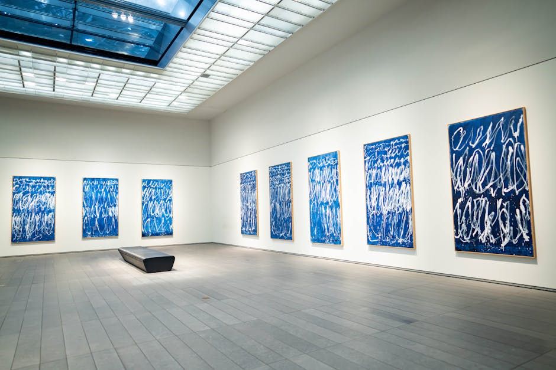
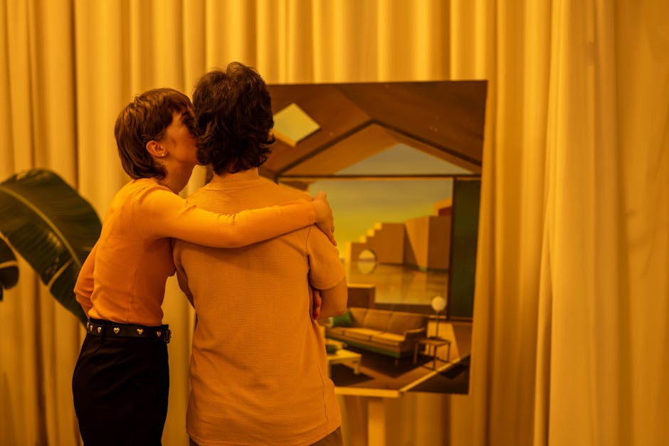
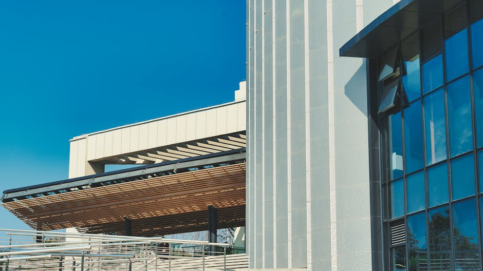
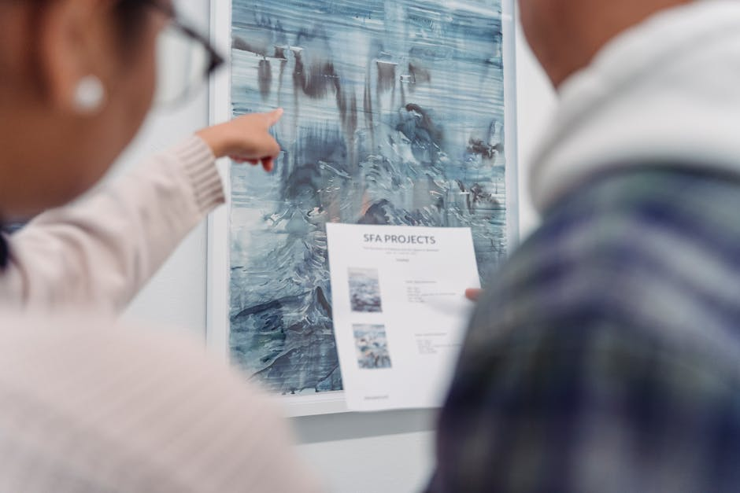

Esplora il risveglio della cultura contemporanea.
Il tuo punto di riferimento quotidiano per approfondire le arti visive, il teatro, la letteratura e comprendere le complesse dinamiche della società italiana. Analisi critiche e visioni inedite.

I Nostri Approfondimenti
Esploriamo ogni sfaccettatura del panorama culturale per offrirti una visione completa e stimolante.

Arti Visive
Recensioni di mostre, profili di artisti emergenti e affermati, e analisi delle correnti estetiche che definiscono le arti visive nel nostro tempo.

Società Italiana
Indagini e riflessioni sui mutamenti sociali, l'architettura urbana, il design e le tendenze che plasmano la società italiana contemporanea.

Letteratura
Un faro sulle nuove uscite editoriali, interviste agli autori e saggi critici per orientarsi nel vasto mondo della letteratura moderna.
Teatro e Spettacolo
Il palcoscenico come specchio della realtà. Copriamo le performance teatrali più innovative, la danza contemporanea e le espressioni performative che sfidano le convenzioni.
Cosa Dicono i Nostri Lettori
La voce di chi vive la cultura ogni giorno.
"Le recensioni sulle arti visive sono sempre puntuali e offrono chiavi di lettura mai banali. WakeLabs è diventato il mio punto di riferimento prima di visitare una mostra."
"Apprezzo molto la sezione dedicata alla società italiana. Riescono a collegare le dinamiche architettoniche e di design con i veri cambiamenti sociali in atto."
"Ottima copertura degli eventi letterari e teatrali. È diventata la mia lettura quotidiana per restare aggiornata sulla cultura contemporanea."
La Nostra Missione
WakeLabs nasce con l'intento di esplorare e raccontare la cultura contemporanea in tutte le sue forme. Ci poniamo come un ponte tra le produzioni artistiche di alto livello e un pubblico curioso ed esigente.
Dalle avanguardie delle arti visive fino alle nuove voci della letteratura e del teatro, analizziamo come queste discipline si intreccino con l'evoluzione della società italiana.
Promuoviamo i contenuti di eccellenza, offrendo chiavi di lettura critiche e aggiornamenti costanti per chiunque voglia comprendere il mondo attraverso la lente della cultura.

Domande Frequenti
Tutto ciò che devi sapere sui nostri contenuti.
Quali argomenti coprite principalmente?
Con quale frequenza pubblicate nuovi articoli?
Posso proporre un articolo o una mostra da recensire?
Gli articoli sono gratuiti?
Come rimanere aggiornati sulle vostre selezioni?
Restiamo in Contatto
Iscriviti per ricevere aggiornamenti sulle arti visive, sul teatro e sulla letteratura. Compila il modulo per unirti alla nostra comunità interessata alla società italiana contemporanea.
Sede Principale
Via di San Saba, 22
00153 Roma RM, Italia